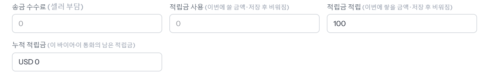
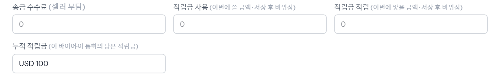
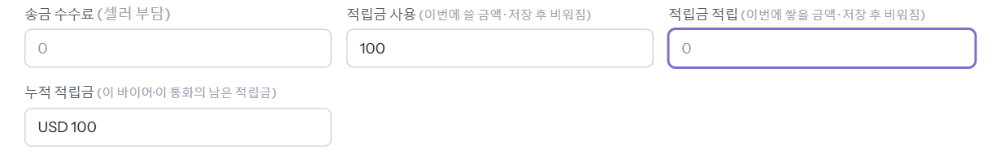
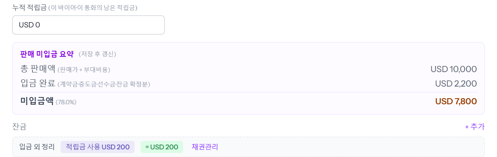
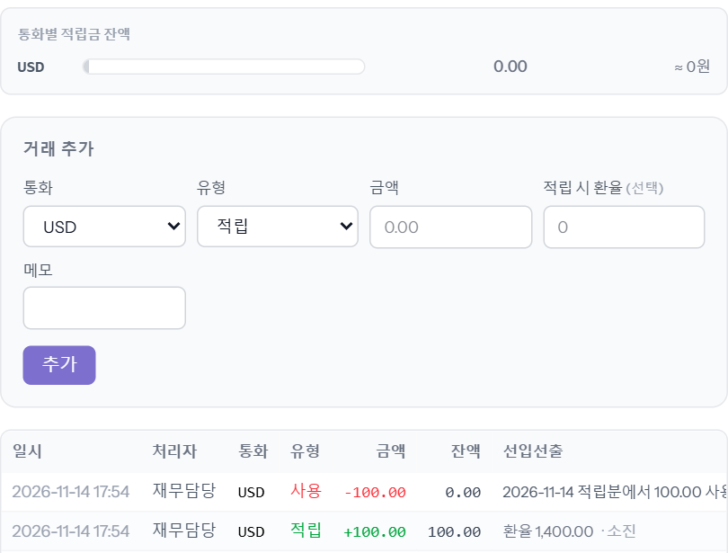

적립금은 회사가 바이어에게 준 크레딧입니다. 한 차에서 적립해 두고, 같은 바이어의 다른 차 잔금을 그 적립금으로 갚습니다. 적립금은 바이어 · 통화별로 따로 쌓입니다(USD 적립금은 USD 차에만). 재무 · 관리 이상이 넣습니다. 예시 바이어 GUIDE SAMPLE TRADING · 적립 00가1131 · 사용 00가1141.
회사마다 다릅니다 — 바이어 현금 원장을 쓰는 회사(2026-11-14 기준 heymanerp · karabaerp)는 외화 적립금이 그 바이어의 남은 현금에서 나옵니다(남은 현금보다 많이 적립할 수 없음 — 씬 「바이어 정산현황」). 쓰지 않는 회사(ssancarerp)는 넣은 만큼 바로 쌓입니다. 아래 그림은 쓰지 않는 회사 화면입니다.
「입금 현황」 아래 「적립금 적립」에 이번에 쌓을 금액(차 통화)을 넣습니다. 저장하면 바이어 적립금에 더해지고 칸은 비워집니다. 옆 「누적 적립금」이 이 바이어 · 이 통화의 남은 적립금입니다.


「적립금 사용」에 이번에 쓸 금액을 넣고 저장합니다. 남은 적립금보다 많이 넣으면 저장이 막힙니다.

저장하면 그 금액만큼 이 차의 미수가 줄고(받은 돈에 들어감), 잔금 칸 위 「입금 외 정리」에 「적립금 사용 USD 100」이 붙습니다. 누적 적립금은 그만큼 줄어듭니다.

통화별 남은 적립금과 적립 · 사용 이력이 보입니다. 사용은 먼저 적립한 것부터 꺼내 쓰고, 「선입선출」 칸에 어느 적립분에서 얼마를 썼는지 남습니다. 차와 관계없는 적립 · 반환 · 조정은 여기 「거래 추가」로 넣습니다.
